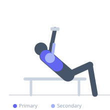
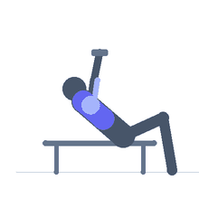

Exercise guide / Chained Incline Dumbbell Press
Chained Incline Dumbbell Press
An incline dumbbell press with chains attached to the dumbbells and draped on the floor. As the dumbbells rise, more chain links lift off the floor, progressively increasing the load through the top range of motion. This accommodating resistance technique challenges the pectoralis major clavicular fibers through the top portion where free weights typically become easier due to mechanical advantage.
Primary muscles
pectoralis major clavicular
Secondary muscles
triceps long head
deltoid anterior
Stabilizers
infraspinatus
pectoralis minor
Equipment
Dumbbell (Fixed)
Adjustable Bench (Incline / Decline)


Starting position
- Set the incline bench to 30–45 degrees. Attach chains to the dumbbell handles so they drape to the floor when held at the bottom position. Lie on the bench with the loaded dumbbells at chest level.
Setup
- Chains can be attached with carabiners or looped through the dumbbell plate holes. The chain should begin lifting off the floor when the arms reach roughly the midpoint of the press.
Steps
- Step 1: Begin at the bottom position with elbows at chest level. Chains drape to the floor.
- Step 2: Press the dumbbells upward. As they rise, chain links progressively lift off the floor, increasing the load.
- Step 3: At full lockout, all chains are suspended and the peak load occurs.
- Step 4: Lower under control. As dumbbells descend, chains re-contact the floor, deloading the bottom. Repeat.
Coaching cues
- Press hard all the way to lockout — the chains test you there
- The bottom feels light, the top feels heavy — that's the point
Breathing
- Inhale at the bottom, exhale forcefully through the press.
Range of motion
- Full range, bottom to lockout. Chain loading is greatest at the top.
Tempo
- 3-1-2-1
Common mistakes
- Chains that never lift off the floor — means chains are too long or dumbbells don't travel high enough
- Using dumbbell weight that is too heavy before accounting for chain load
- Chains not secured and sliding off mid-set
Safety
- Secure chain attachments before beginning
- Reduce dumbbell weight below normal incline press weight to account for chain addition
- Have a training partner observe chain behavior during the first set
Training
- strength: 3–6 reps
- hypertrophy: 6–10 reps
- strength: 4–6 sets
- Rest: {'strength': 180, 'hypertrophy': 120}